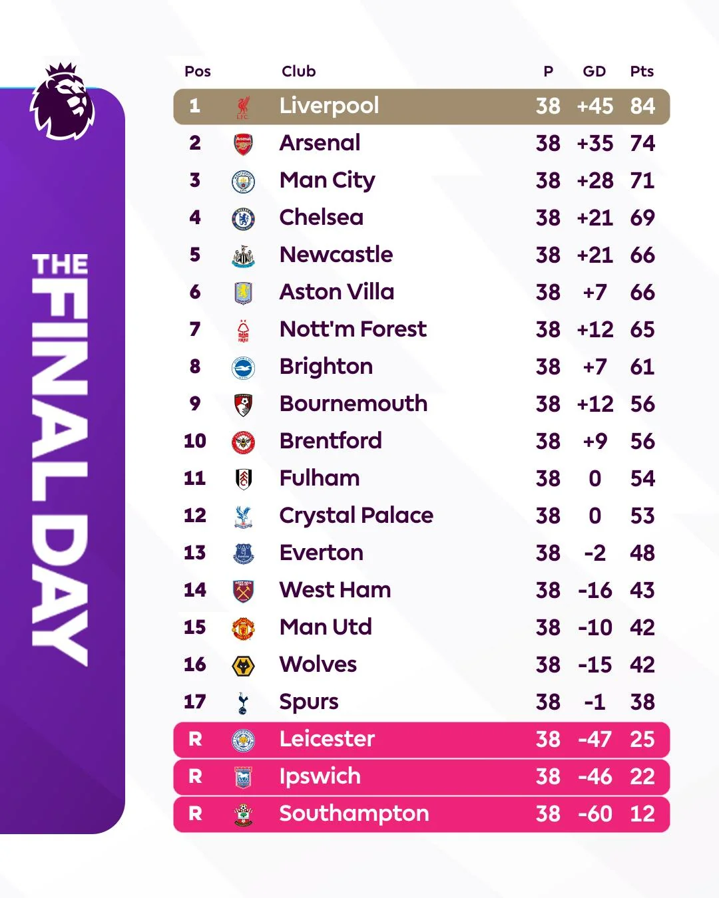

The English Premier League consists of 20 clubs playing 38 matches each, with the bottom three teams relegated to the Championship at the end of the season. Teams earn 3 points for a win and 1 for a draw, with league standings determined by total points, then goal difference, and goals scored. Squads are limited to 25 players, including at least 8 homegrown individuals, and must adhere to Squad Cost Ratio limits to ensure financial sustainability. On the pitch, matches follow standard FIFA laws, featuring VAR for critical decisions and new 2025/26 updates like the 8-second limit for goalkeepers holding the ball and "captain-only" zones for referee consultations. After the end of the season, the 3 teams with the least amount of points get relegated to the lower division, while the 3 teams with the most points in the lower division get promoted to the premier league. The top 4 teams get qualification for the champions league, the biggest competition in club football. The team in 6th gets qualification for the Europa League, and 7th gets qualification for the conference league.
